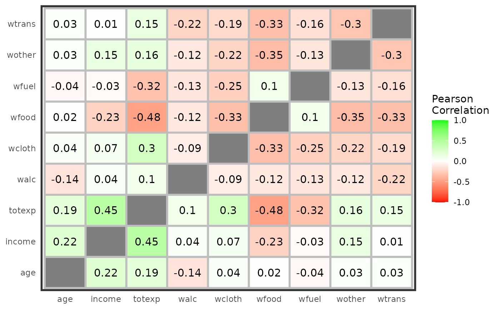

This is a simple function that produced plots that may help you to understand the shape of your dataset. Today, 3 plots are implemented;(1) a small histogram for each features, (2) a correlation matrix and (3) a 2-Dimension Hexbin Frequency.
explore(data, type = "histogram", keep = NULL, drop = NULL, ...)
| data | is the data frame containing the observations. Each row represents an observation and each variable is stored in one column. |
|---|---|
| keep | character vector: names of columns to keep (filter) |
| drop | character vector: names of columns to drop (filter) |
| … | is additional arguments to be passed to internal functions. Currently only col.fill and bins for histograms. |
explore(BudgetUK, type ="hist")explore(BudgetUK, type ="cor",drop="children")#> Warning: Removed 9 rows containing missing values (geom_text).